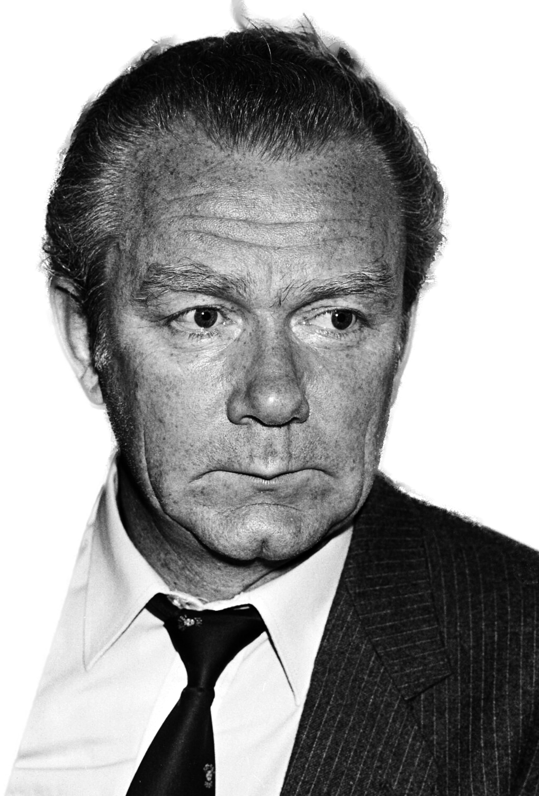
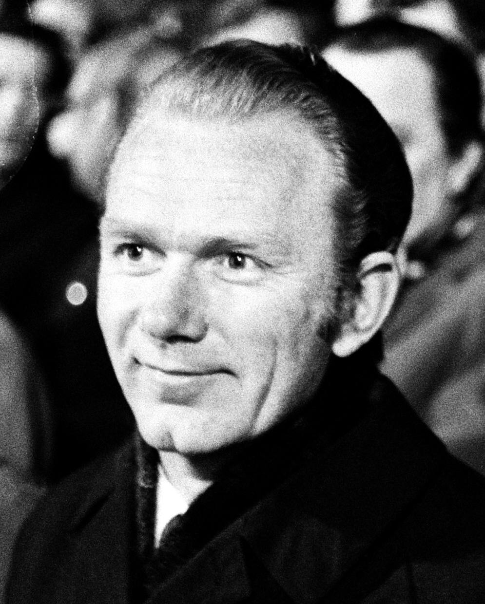
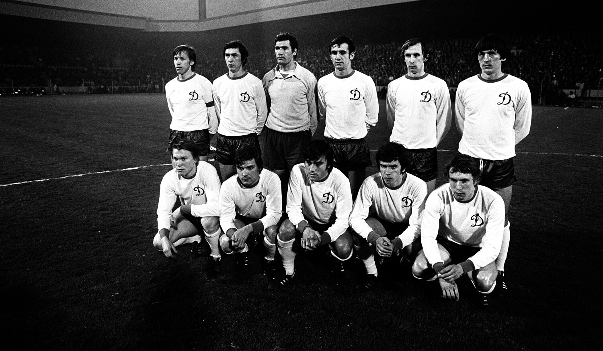

VALERI LOBANOVSKI
DINAMO DE KIEV · ENTRENADOR
VALERIY LOBANOVSKYI · 16/09/1985 · ROB CROES / ANEFO · CC0
PLANO: RECREACIÓN
COPAS: RECREACIÓN
ESTADÍSTICO
ANATOLI ZELENTSOV
TARJETA: RECREACIÓN

05/04/1975 · ROB MIEREMET / ANEFO · CC0
HOJA: RECREACIÓN
CAMPO: RECREACIÓN

DINAMO DE KIEV EN EINDHOVEN · 23/04/1975 · ANEFO / NATIONAAL ARCHIEF · CC0
ARCHIVO · 1975
TROFEOS GENÉRICOS: RECREACIÓN
1975 · 3-0
1986 · 3-0
SUMA
EQUIPO
PIZARRA: RECREACIÓN
FOTOS: ROB CROES / ANEFO, ROB MIEREMET / ANEFO Y ANEFO, NATIONAAL ARCHIEF (CC0),
VÍA WIKIMEDIA COMMONS · RADIADOR, COPAS, TARJETA, HOJA, CAMPO Y PIZARRA: RECREACIÓN